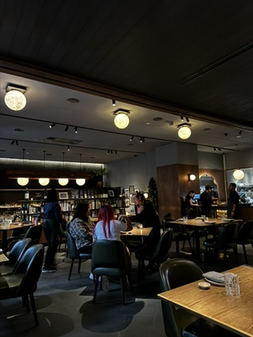
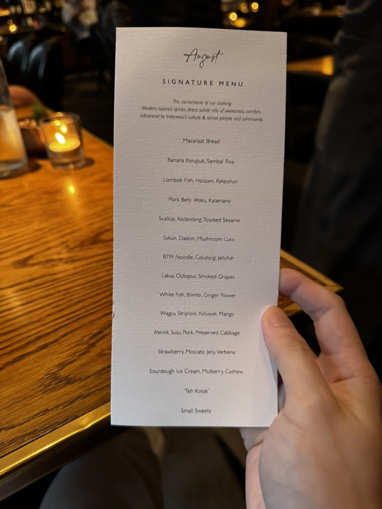
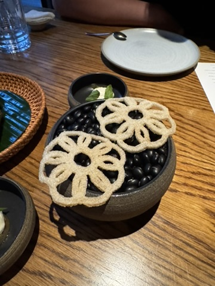
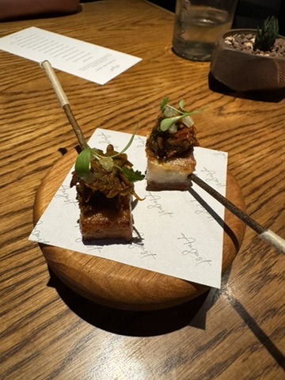
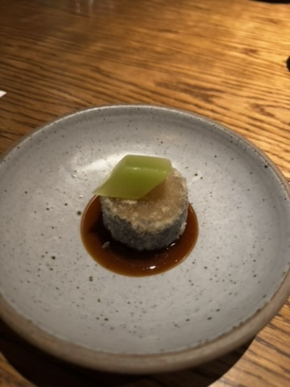
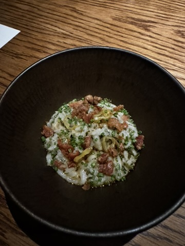
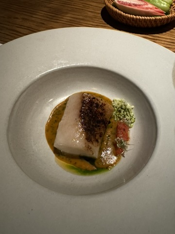
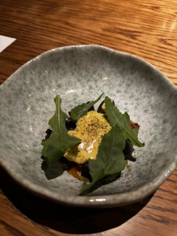

Order Expectation
Come here ready for the full set-menu experience, not just one plate and out.
Food Review / Jakarta / 18 Apr 2026
If you are looking for a Jakarta fine dining reference for a date or birthday, August still holds up. This was my third visit, and it still felt polished, intimate, and worth dressing up for without becoming stiff.
Expensive but still worth it. This was one of those meals that felt confident all the way through: no weak dish, enough time to enjoy the pace, and service that stayed warm instead of formal for formality’s sake.

Some fine dining rooms impress you once and then become harder to justify. August is different because the experience still feels satisfying even when you already know the standard is high.
This was my third visit, this time for a date-night dinner on 18 Apr 2026. That alone made me pay even more attention to whether the meal still felt exciting or whether I was mostly returning because of reputation. It still landed.
If I had to explain August quickly for someone choosing where to book, I would say this: modern Indonesian fine dining that feels polished and expensive, but still warm enough that you can actually relax into the evening and enjoy the person across the table.
NutNibbles Signature Meter
I want this blog to be useful when you are deciding where to eat, not just nice to scroll. For August, the quick read is this: great service, enough pacing to enjoy the date, no weak dish, and a menu that still felt worth revisiting for the third time.
August still feels like a place I can recommend without overexplaining, because the room, service, and menu all do the heavy lifting together.
Why it stays in rotation
Personal Review
August is one of those places I would confidently recommend when someone asks for a fine dining spot in Jakarta that feels impressive without becoming cold. The room stays intimate and homey, the pacing gives you time to actually enjoy the conversation, and the service feels hospitable instead of overly formal.
This dinner was a date night for me, and honestly that is where August works best. It is polished, but not intimidating. Expensive, yes, but in the way that still makes sense once the full set menu starts unfolding and every course feels considered.
The Teh Kotak course was the one that stayed in my head after dinner because it was playful, familiar, and very August in spirit: refined, but still tied to flavors that feel close to home. The BTM Noodle delivered comfort in a sharper, more elevated way, while the striploin gave the meal that confident main-course peak you want from a special dinner.
Worth it? Yes. If you need a reliable Jakarta reference for a birthday, anniversary, or a date you want to get right, August still deserves a spot high on the list because it handles both food and mood well.
Disclosure: I paid for this meal in full. Nothing here was hosted, comped, or discounted.
Order Expectation
Come here ready for the full set-menu experience, not just one plate and out.
Best Bites
Teh Kotak, BTM Noodle, and striploin were the courses I would happily talk about again after dinner.
Money Read
Expensive, but worth it when the whole room-to-service-to-food balance lands this cleanly.
What the meal looked like
The menu gave a useful rhythm for a date-night dinner: enough build-up at the start, enough pacing in the middle, and enough memorable finishing notes that the evening never felt rushed or overly managed.




Standout Courses
If someone asked me what makes August feel like a reliable recommendation instead of just a pretty set menu, I would point them straight to these courses first because they explain the restaurant’s range: playful, comforting, and properly satisfying.



